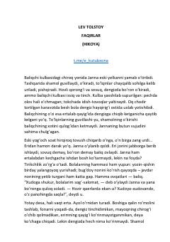

FYetim qolgan go‘daklarni o‘z qaramog‘iga olgan mehribon baliqchi ayol haqida hikoya.
Ushbu hikoyada baliqchi ayol Jannaning bo‘ronli tunda vafot etgan qo‘shnisining yetim qolgan ikki go‘dagini o‘z qaramog‘iga olishi tasvirlanadi. Asar insoniylik, rahm-shafqat va qiyinchiliklarga qaramay boshqalarga yordam berish fazilati haqida hikoya qiladi.